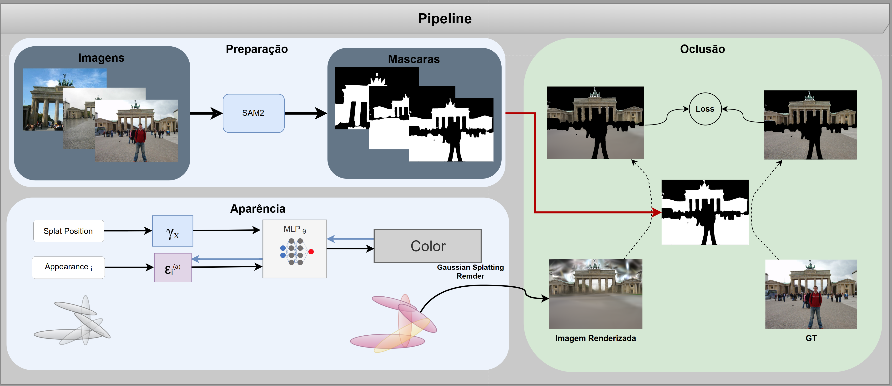

This work explores the use of Gaussian Splatting techniques for neural rendering in uncontrolled environments, incorporating appearance embeddings and occlusion masks to enhance robustness. We propose an extended pipeline that integrates semantic segmentation—leveraging foundation models such as Segment Anything—to identify and suppress occluded regions, thereby improving visual consistency across views. Appearance embeddings are learned to guide view-dependent effects and sharpen the correspondence between images under complex lighting and occlusions. Our approach demonstrates improved stability and visual quality in multi-view synthesis tasks, particularly in real-world scenes with background clutter and partial visibility. Experiments show that combining masks with appearance cues leads to more coherent reconstructions and faster convergence, especially in comparison with baseline splatting methods.
The proposed method improves the robustness of Gaussian Splatting in real-world (in-the-wild) scenes by combining semantic segmentation masks and appearance embeddings. The pipeline consists of three main stages: Preparation, Appearance Modeling, and Occlusion-Aware Rendering.

Input images are processed using SAM2 (Segment Anything v2), generating binary semantic masks that highlight foreground objects and help isolate occluded regions. These masks are used both during training and evaluation to condition the loss and filtering stages.
Each 3D Gaussian \( \mathcal{P}_i \) is defined by a position and orientation in space. Appearance modeling is conditioned by:
The final rendered image is computed via standard Gaussian Splatting, but the loss is conditioned on the semantic masks to ignore occluded or irrelevant regions. The rendering loss is defined as:
\( \mathcal{L} = \frac{1}{N} \min_{\theta \in \Theta} \sum_i \mathcal{L}_c(x_i, \mathcal{G}(S, C_{\theta_i})) \)
where \( x_i \) are input views, \( S \) the segmentation masks, and \( C_{\theta_i} \) the color predicted via the appearance MLP. This formulation leads to better optimization by reducing the influence of background clutter and occlusion.
Each 3D Gaussian \( \mathcal{P}_i \) is parameterized by:
We would like to thank
Towaki Takikawa,
Joey Litalien,
Kangxue Yin,
Karsten Kreis,
Charles Loop,
Derek Nowrouzezahrai,
Alec Jacobson,
Morgan McGuire and
Sanja Fidler
for licensing the code of the paper Neural Geometric Level of Detail:
Real-time Rendering with Implicit 3D Surfaces and project page under the MIT License. This website is based on that page.
We also thank the Stanford Computer Graphics Laboratory for the Bunny, Dragon, Armadillo, and Happy Buddha, acquired through the Stanford 3D scan repository. Finally, we thank Keenan Crane for the Spot and Bob models.